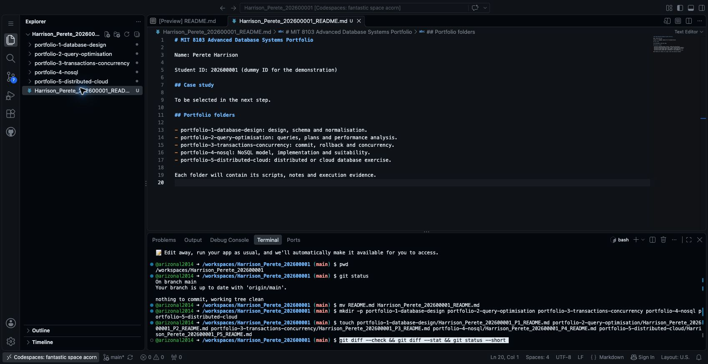
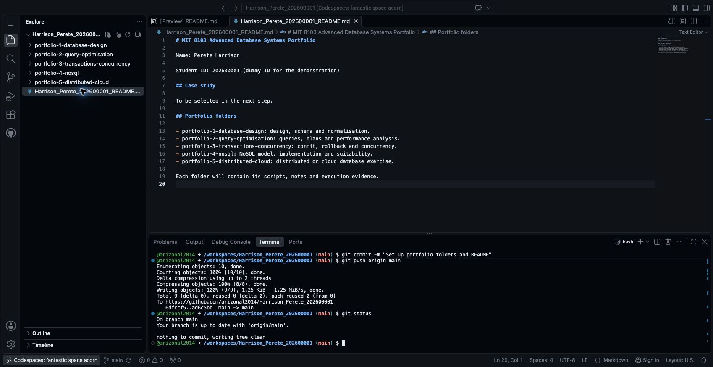
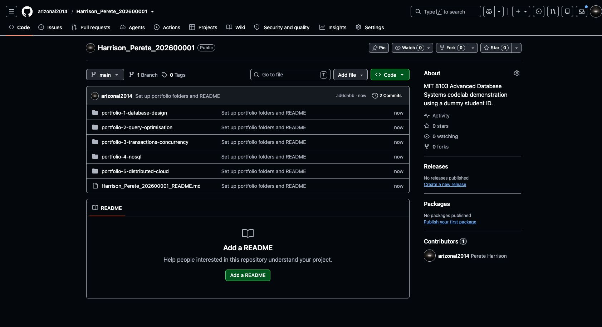

Step 3 Create your portfolio folders and first commit
Section 5 of the assessment brief suggests separate folders for the five portfolios and asks for progressive GitHub commits. We will create that structure now.
Use your own name and student ID wherever you see Harrison_Perete_202600001. Run the terminal commands from your repository folder in Codespaces.
Rename your README
The previous step created README.md automatically. Rename it to follow the submission filename convention:
mv README.md Harrison_Perete_202600001_README.mdIf your file is already correctly named, skip this command.
Add your details
Double-click the renamed file in Explorer. Replace its contents with the following, using your own details:
# MIT 8103 Advanced Database Systems Portfolio
Name: Perete Harrison
Student ID: 202600001 (dummy ID for the demonstration)
## Case study
To be selected in the next step.
## Portfolio folders
- portfolio-1-database-design: design, schema and normalisation.
- portfolio-2-query-optimisation: queries, plans and performance analysis.
- portfolio-3-transactions-concurrency: commit, rollback and concurrency.
- portfolio-4-nosql: NoSQL model, implementation and suitability.
- portfolio-5-distributed-cloud: distributed or cloud database exercise.
Each folder will contain its scripts, notes and execution evidence.Save with Ctrl+S on Windows/Linux or Cmd+S on macOS. If the file opens as a rendered preview, choose Open Source File to edit its text.
Create the five folders
In the terminal, run each line:
mkdir -p portfolio-1-database-design
mkdir -p portfolio-2-query-optimisation
mkdir -p portfolio-3-transactions-concurrency
mkdir -p portfolio-4-nosql
mkdir -p portfolio-5-distributed-cloudmkdir creates a directory. The -p option allows the command to succeed if the directory already exists.
Git does not store empty directories. Add an empty README to each folder so it can be saved to GitHub. We will fill these files during their respective activities.
touch portfolio-1-database-design/Harrison_Perete_202600001_P1_README.md
touch portfolio-2-query-optimisation/Harrison_Perete_202600001_P2_README.md
touch portfolio-3-transactions-concurrency/Harrison_Perete_202600001_P3_README.md
touch portfolio-4-nosql/Harrison_Perete_202600001_P4_README.md
touch portfolio-5-distributed-cloud/Harrison_Perete_202600001_P5_README.mdtouch creates an empty file if it does not already exist. Expand the folders in Explorer to see the files.

Save your changes to GitHub
Run each command separately.
Check what changed:
git statusPrepare the changes for the next saved version:
git add -AReview the files you are about to save:
git diff --cached --statYou should see your personalised README, five portfolio README files and the removal of the old README.md. Git may recognise the README change as a rename instead.
Create a commit, which records this version of your work:
git commit -m "Set up portfolio folders and README"Send the commit to GitHub:
git push origin mainCheck again:
git statusExpected result: Your branch is up to date with 'origin/main' and nothing to commit, working tree clean.

Confirm on GitHub
Open your repository on GitHub in another browser tab. Refresh it if necessary. Check that the five folders, personalised README and commit message are visible.

GitHub may still display Add a README because the personalised filename is not its standard README.md. Your file is present in the file list; click its name to read it.